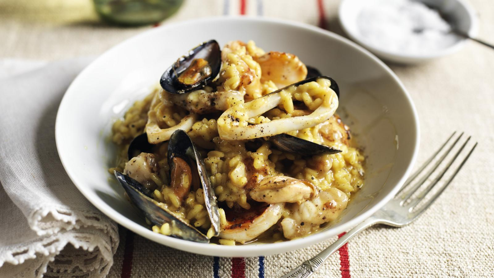

Risotto Recipe

A standout seafood risotto recipe flavoured with saffron and white wine. This dish will blow the socks off your guests.
Ingredients
- 450g Prawns, shell on
- 36 Small mussels
- 100g Monkfish fillet, thinly sliced
- 50g Squid, cleaned and thinly sliced
For The Stock
- 25 ml Olive oil
- 1 gGarlic clove, chopped
- 1 Medium carrot, chopped
- 1 Celery stick, chopped
- 1 Small onion, chopped
- 1 Small leek, chopped
- 1/4 Red chilli, chopped
- 1 Tomato, chopped
- 1/8 tsp Saffron
- 900ml Fish stock
- Cooking liquor from the mussels
For The Risotto
- 50g Unsalted butter
- 2 Shallots, chopped
- 1 Garlic clove, chopped
- 350g Risotto rice e.g. Arborio
- 120ml Dry white wine
- 25g Parmesan
- 1 tbsp Olive oil
Directions
- Peel the prawns, reserving the shells for the stock. Set the prawns aside until needed. Wash the mussels, scrape them clean and pull out the beards. Open by placing in a pan with a splash of water, covering tightly then setting over a high heat until they have opened. Strain through a colander to remove any grit. Save the liquor for the stock. Remove the meats from all but 8 of the shells, discard the empty shells. Leaving a few whole mussels in the risotto makes it look very appetizing. Set the mussels aside until needed.
- To make the stock, heat the oil in a large pan and add the garlic, carrot, celery, onion, leek and chilli. Fry for 5 minutes without colouring. Add the reserved prawn shells and cook for another couple of minutes then add the tomato, saffron, fish stock and mussel liquor. Bring to the boil and simmer for 30 minutes then push through a conical sieve with the back of a ladle to extract as much flavour as possible.
- To make the risotto, melt the butter in a heavy-based pan (this will lessen the chance of the risotto burning on the bottom as it cooks) then add the shallots and garlic and sweat until softened. Add the rice and stir for a couple of minutes until well-coated with butter. Pour in the wine. Bring to the boil then remove from the heat and let the rice absorb all the liquid. You can make the risotto to this stage some time before completing the dish. The final cooking time, about 20 minutes, is reduced to about 10 by doing this.
- Return the pan to a medium heat and add the shellfish stock to the rice in three stages, allowing the liquid to be absorbed each time before adding the next amount. Stir continuously until the stock is almost completely absorbed.
- When the rice is just tender but still firm to the bite (al dente), add the parmesan. (The small amount of stock left at this stage will be absorbed by the cheese.) While the risotto is cooking, brush the rest of the seafood with olive oil and grill for 3-4 minutes. To serve, carefully mix the seafood including the mussels into the risotto. Leave a few pieces on top to garnish.
Return to home